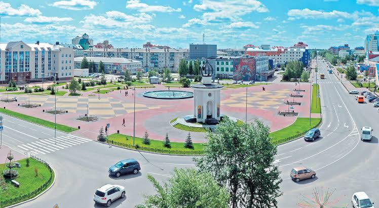
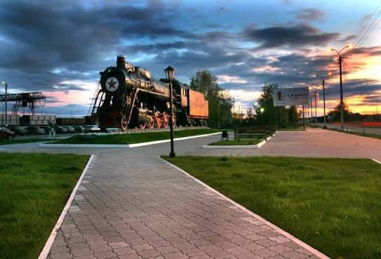
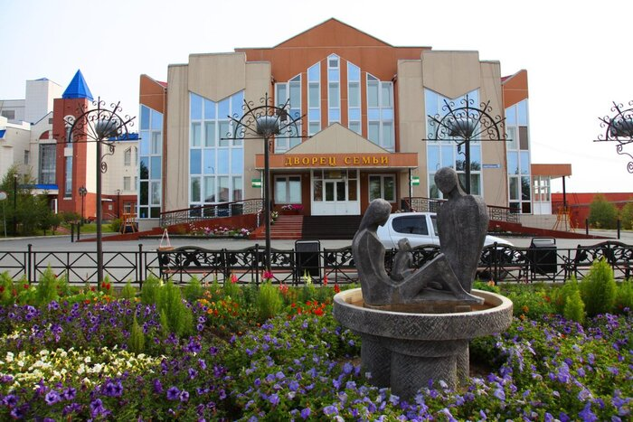
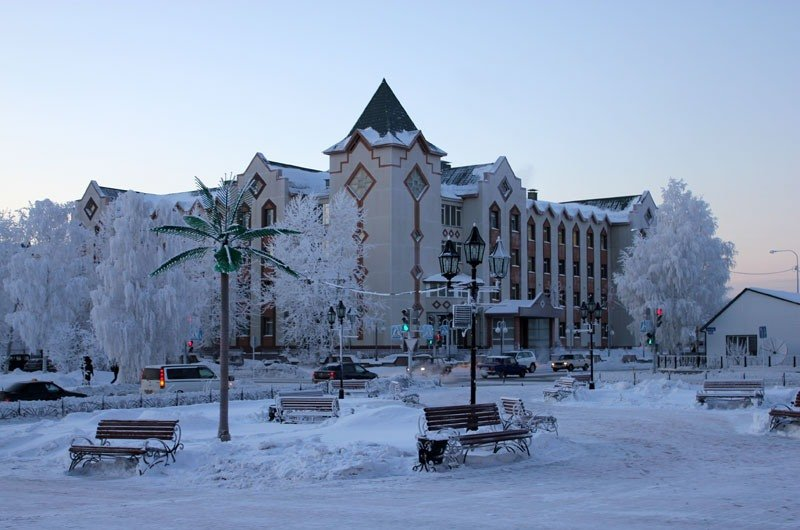

Люди, оставившие след в истории местного самоуправления
Галерея города




Председатель поссовета (1968 — 1990)
Лопaтина Валентина Яковлевна
Первопроходец и легендарный руководитель, которая приняла таёжный посёлок из 14 щитовых домиков и за 22 года бессменного руководства превратила его в современный предгородской центр с населением около 30 тысяч человек.
Руководитель, возглавлявший Югорск на протяжении 18 лет в его новейшей истории. Под его руководством город прошёл масштабную модернизацию инфраструктуры, снос ветхого деревянного фонда и благоустройство микрорайонов.